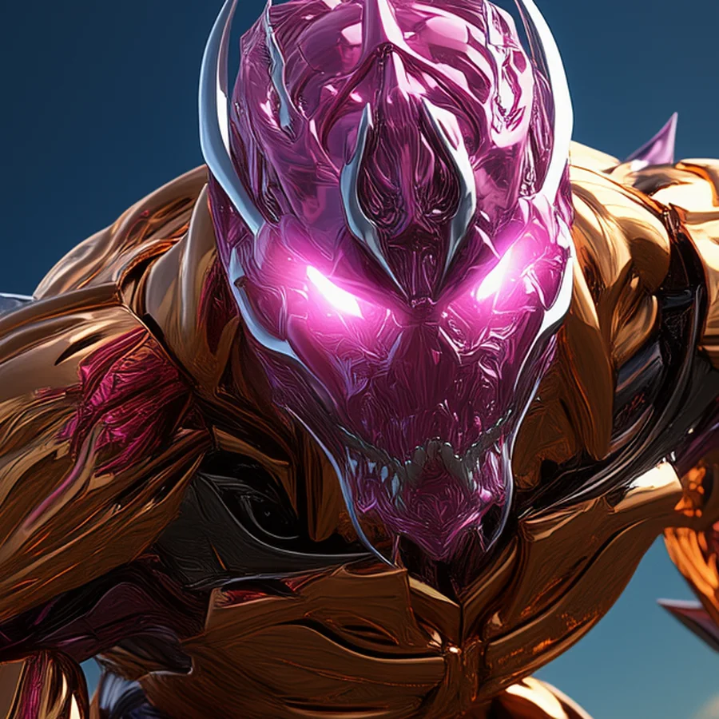
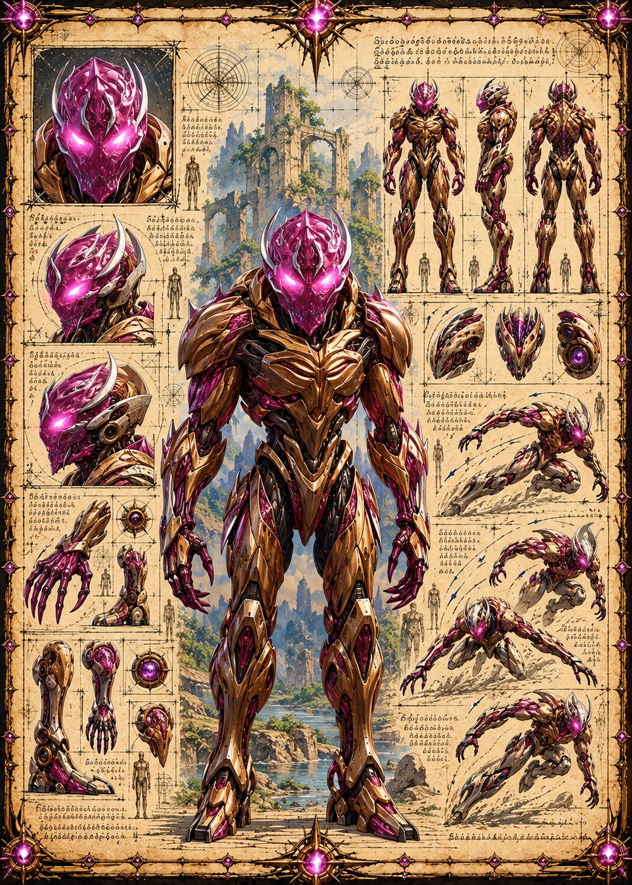

©
©
GENEZYS ARCHIVE · Earth 2 · Synthbot
Gorivan
Outbreak Stalker

Archive record
Gorivan was not built. Like every shell of the Primal Horde, it was grown from the Spore. The Contagion Shot pierces a single enemy and drains their strength with infection. Wherever Gorivan stalks, the Horde follows.
Combat signature
Contagion Shot
190 Cosmara
160 Animus
190 Vitalis
Fires virulent projectile: Deals 100 pierce damage to 1 enemy. The target also loses 50 Cosmara.
Genezys 10:01 ™&©2026LEGIONS
